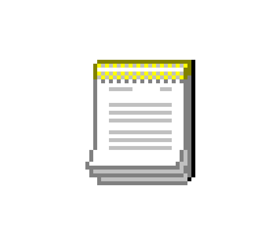
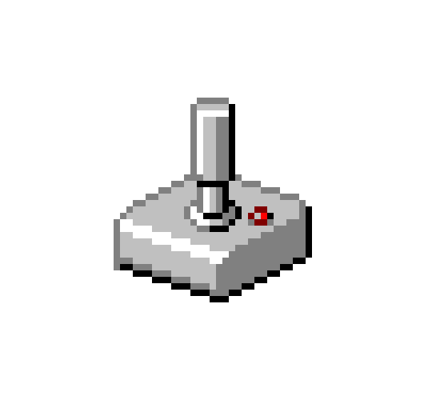

About

Games
 Contact
Contact
Contact
Contact
Programador de videojuegos con varios años de experiencia en lenguajes como C++, C# y JavaScript, así como en herramientas como Unity y UnrealEngine. A lo largo de mi trayectoria, he trabajado en diversos proyectos, tanto personales como colaborativos, ejerciendo principalmente de programador principal pero también de diseñador y productor.
Especializado en el desarrollo de videojuegos en motores, también considero que tengo una gran capacidad de entender la programación a un nivel lógico, lo que me ayuda a poder entender y trabajar sobre cualquier proyecto o código que se me de.
Con una gran pasión por desarrollar videojuegos y llevar mis ideas a cabo mi objetivo es seguir creciendo como programador en la industria del videojuego.
Juegos realizados para distintas GameJams de Itch.io
En estos juegos he realizado la programación y parte del diseño.
Para probar estos juegos puedes encontrarlos en mi itch.io.
Iich.io
Este juego fue realizado entre dos personas para la ScoerSpace Jam #27 de Itch.io
La temática de Jam era realizar un juego con un ScoreBoard y que tuviera relación con Gatos + Pistolas.
Realizamos un juego al estilo "Fruit Ninja" en el que, en un tiempo limitado, tienes que disparar a la mayor cantidad de fruta que te lanzan.
Tambien añadimos una dinamita que resta tiempo y unos gatos que te añaden.
Este juego fue realizado en 3 días.
Este juego fue realizado entre dos personas para la TavernGameJam - Summer'24
La temática de la Jam era "Key Item".
Para nuestro juego decidimos hacer un DungeonCrawler, en el que solo podrás llevar un objeto encima a la vez.
Para la IA de los enemigos tuve que añadir un paquete de Unity, NavMeshPlus, el cual no esta adaptado para vista isometrica, por lo que tuve que retocarle ciertas cosas.
Este juego fue realizado en una semana.
Juego realizado con C++ en Unreal Engine 5.4.
En este proyecto he ejercido el cargo de senior programmer, además de encargarme de gran parte de la implementación de assets y arte dentro del motor
y del diseño de diversas mecánicas y funcionamientos del juego.
A fecha de hoy, el proyecto cuenta con más de 30 clases creadas enteramente por mí, todas estructuradas y totalmente reescalables.
Contamos con una demo inicial, la cual llevamos a la feria CyL InGame 2025.
ZEP Demo
Para ZEP he diseñado y programado un sistema de diálogos desde 0.
Este sistema que funciona a través de Structs y DataTables está diseñado para que cada NPC tenga su propio estado en el juego en función de: cuántas veces has hablado con él ahora,
cuántas veces lo has hecho a lo largo del juego (Medidor de relación) y otros medidores que indican la fase del juego en la que estas.
Según estos medidores, cuando interactúas con el NPC, el Componente de diálogo te lanzará, si existe, el diálogo correspondiente a el estado del NPC
Lo interesante del Componente de Diálogo es que solo le enviamos estos medidores en forma de string y él busca la conversación que tiene que lanzar en la DataTable. Esto nos permite añadir este componente a otros objetos y simplemente estableciendo un sistema de strings o datos ya tenemos el sistema de diálogo establecido.
Los minijuegos en ZEP están todos derivados de un objeto padre, esto es debido a que todos comparten la misma estructura principal.
Después en cada minijuego solo tenemos que añadir sus acciones.
Estos minijuegos están pensados para poder ser creados en cualquier momento. Así si necesitamos realizar minijuegos fuera del sistema de pesca la implementación seria sencilla.
El sistema de objetos de ZEP funciona a partir de Structs.
Un Struct general que incluye: la información que comparten todos los objetos más un struct del tipo concreto del objeto.
De esta forma si queremos añadir más tipos de objetos al juego solo tenemos que crear su struct para ese tipo de objeto y añadirlo a los structs que se pueden meter en el general.
Después, creamos una tabla de datos con ese Struct general y ahí creamos todos los objetos que vamos a utilizar en el juego, cada uno con un ID individual para poder identificarlos y acceder a cualquiera fácilmente.
Para este proyecto también he creado y organizado un repositorio que hemos manejado con SourceTree
Además, he utilizado herramientas como figma, canva y excel para la organización y diseño de las mecánicas y el equipo.
El código de este proyecto no está disponible debido a temas de copyright
Juego realizado con JavaScript, HTML y Css.
Para este proyecto realicé toda la programación, así como el diseño del juego.
Para probar el proyecto puedes encontrarlo en mi pagina de Itch.io.
BlasterCannon
Para este juego, después de implementar y trastear con librerías de JS como Matters o Planck, decidí gestionar yo mismo las físicas, debido a que lo que yo necesitaba era más simple.
Para esto añadí diversos comportamientos a las pelotas para simular el rebote, la caída y la rotación de una forma más o menos arcade que es lo que mejor quedaba con el concepto del juego.
También cree mi propio sistema de partículas, este es un sistema simple en el que se genera un número aleatorio de partículas, con velocidad y tamaños aleatorios y estas se van volviendo translúcidas hasta desaparecer.
Cuando estas están invisibles se eliminan
Para la implementación de la LeaderBoard utilicé la API de FireBase.
Ahí cree con FirestoreDatabase una base de datos con una tabla para guardar todas las puntuaciones. Cada una con un nombre y una puntuación.
Después, llamo a esta tabla desde un archivo JS par introducir la puntuación. También hice una función para sacar los datos y generar una LeaderBoard con las puntuaciones de los 5 mejores.
Para ver el código entero de este proyecto se puede ver en mi github.
GitHub/BlasterCannon